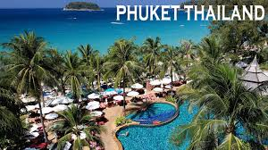
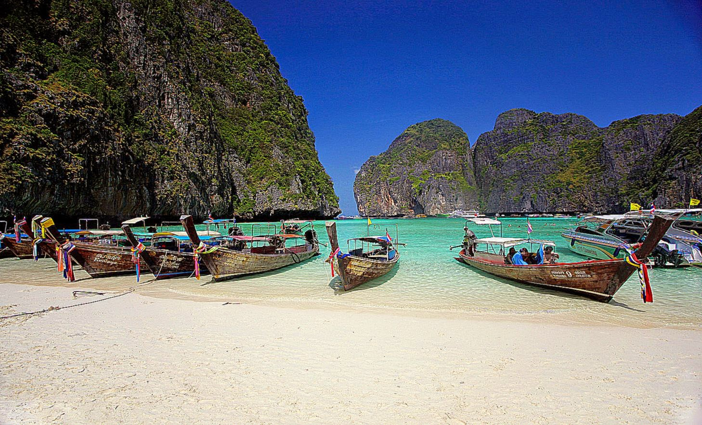
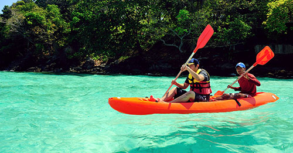

Phuket, a rainforested, mountainous island in the Andaman Sea, has some of Thailand’s most popular beaches, mostly situated along the clear waters of the western shore. The island is home to many high-end seaside resorts, spas and restaurants. Phuket City, the capital, has old shophouses and busy markets. Patong, the main resort town, has many nightclubs, bars and discos.
Phuket is among the world’s finest beach destinations, with fine white sands, nodding palm trees, glittering seas and lively towns. It has something for any taste and budget, with hundreds of hotels to choose from, a wide choice of dining and partying options. Aside from visiting the fantastic attractions of Thailand’s biggest island, you can take an exhilarating speedboat trip to the many nearby tropical paradises, including the famous Phi Phi Islands, or enjoy a serene cruise around the mystical Phang Nga Bay. Phuket is blessed with more than 30 amazing beaches to choose from. Patong Beach, Kata, Karon and Kamala have always been the most popular, but the north of the island reveals some hidden gems for travellers searching for a more romantic atmosphere.
  We are happy to help you plan your next trip!